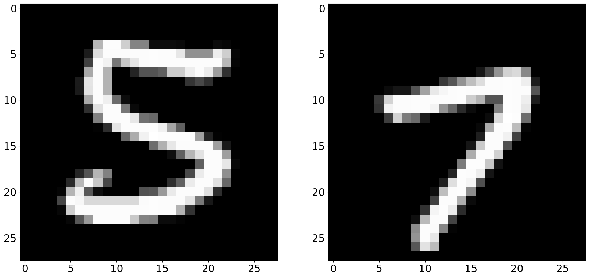
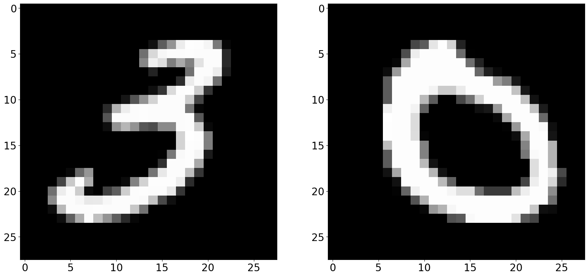
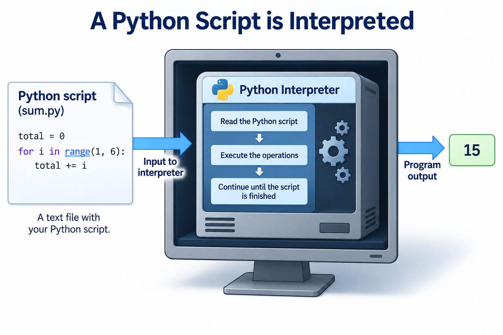
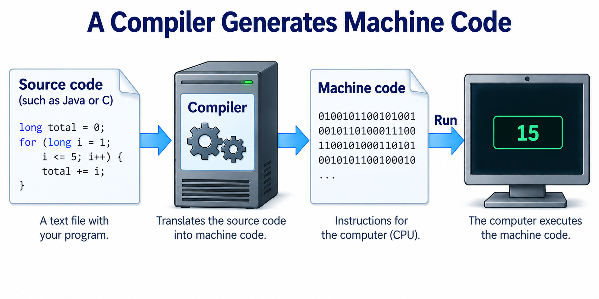
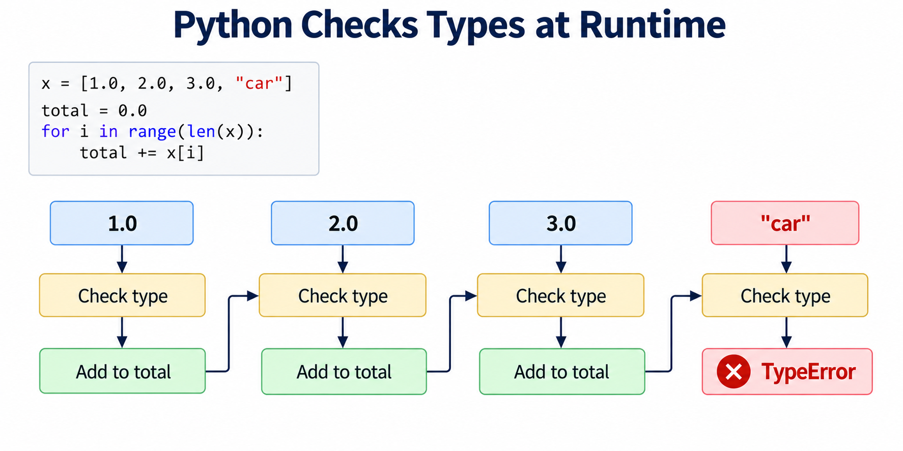
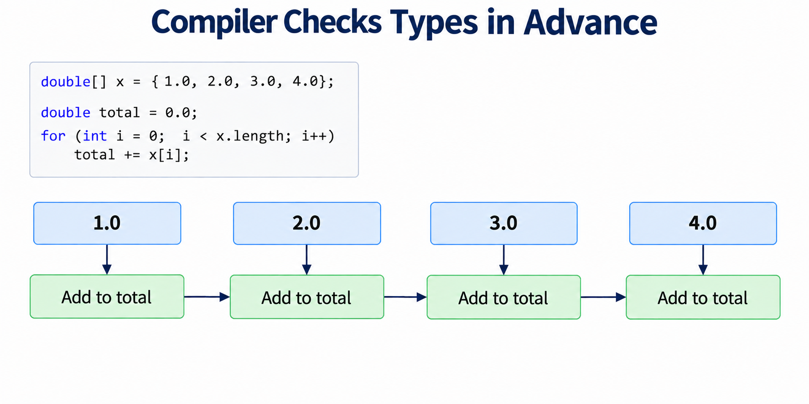
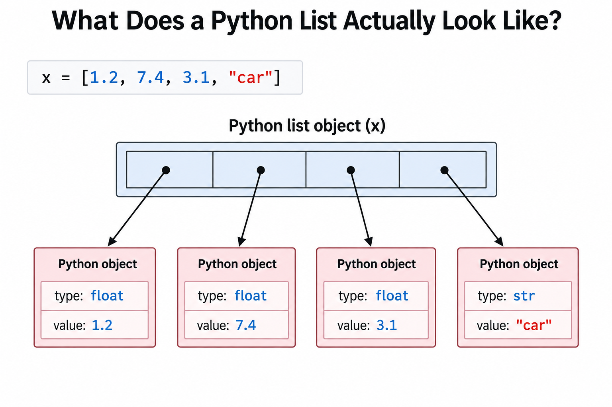
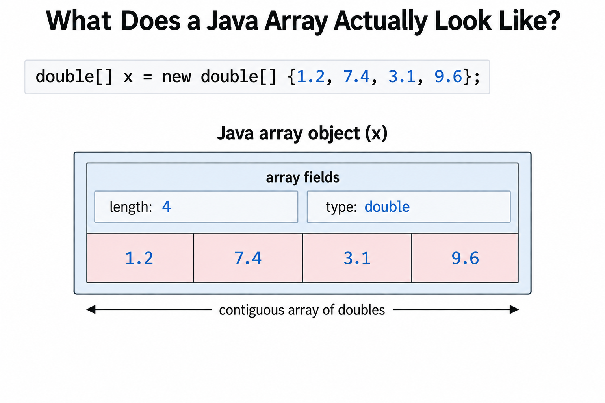
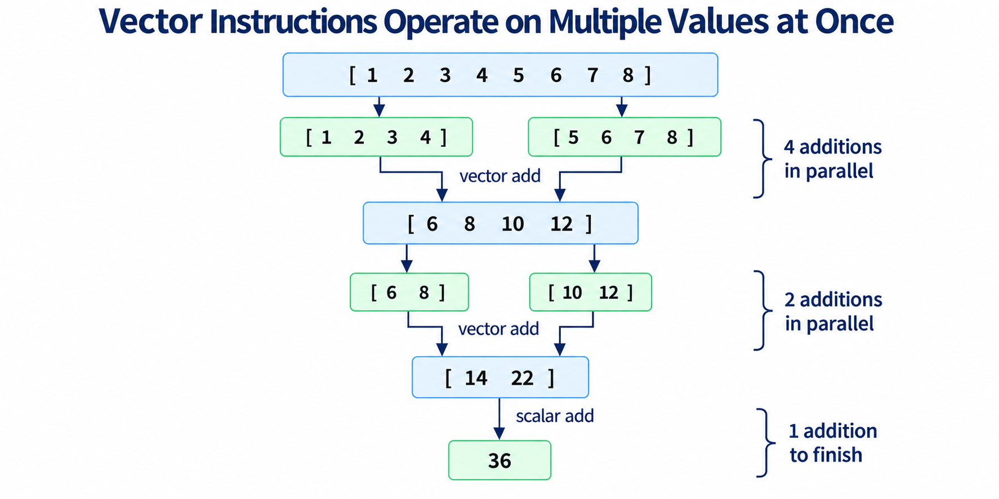
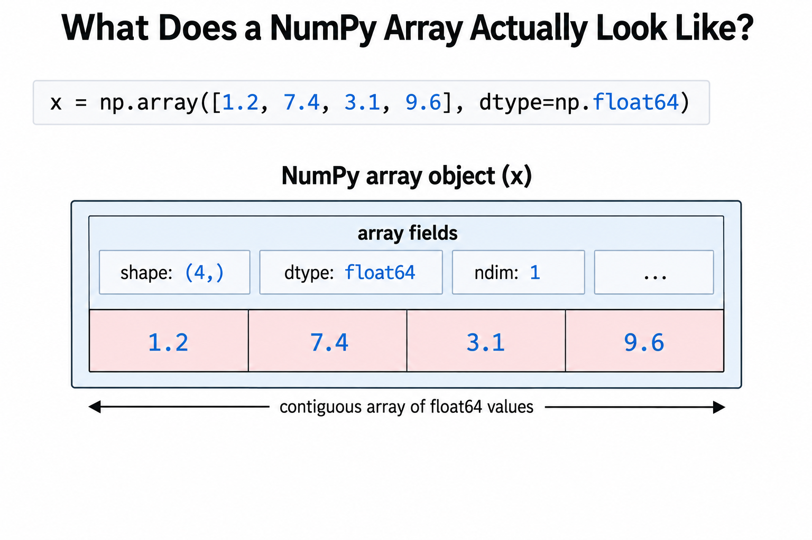

High-Dimensional Extreme Pair

The images in Figure 1 are examples from the MNIST handwritten digit dataset. Each image consists of a \(28 \times 28\) grid of grayscale pixels. MNIST contains images of handwritten digits and is a commonly used dataset in machine learning.
We can think of each pixel in an image as a number representing its grayscale intensity. For example, a pixel value of 0 represents black and a pixel value of 255 represents white.
Although we naturally view the data in Figure 1 as images, we can also represent each image as a vector by placing its pixel values into a one-dimensional array:
\[ x = [x_0,x_1,\ldots,x_{783}]. \]
Since
\[ 28 \times 28 = 784, \]
each MNIST image can therefore be viewed as a point in \(\mathbb{R}^{784}\).
This is our first example of a high-dimensional dataset. Instead of describing each data point using two coordinates \((x,y)\), we now need 784 coordinates.
The file mnist500.txt contains 500 MNIST images. Each line contains the 784 pixel values corresponding to one image. Thus, we can think of mnist500.txt as containing 500 points in 784-dimensional space.
We can look at the 784 intensity values for the first MNIST image using
$ head -1 mnist500.txt
0 0 0 0 0 0 0 0 0 0 0 0 0 0 0 0 0 0 0 0 0 0 0 0 0 0 0 0 0 0 0 0 0 0 0 0 0 0 0 0 0 0 0 0 0 0 0 0 0 0 0 0 0 0 0 0 0 0 0 0 0 0 0 0 0 0 0 0 0 0 0 0 0 0 0 0 0 0 0 0 0 0 0 0 0 0 0 0 0 0 0 0 0 0 0 0 0 0 0 0 0 0 0 0 0 0 0 0 0 0 0 0 0 0 0 0 0 0 0 0 0 0 0 0 0 0 0 0 0 0 0 0 0 0 0 0 0 0 0 0 0 0 0 0 0 0 0 0 0 0 0 0 0 0 0 0 0 0 0 0 0 0 0 0 0 0 0 0 0 0 0 0 0 38 191 138 24 24 108 138 34 0 0 0 0 0 0 0 0 0 0 0 0 0 0 0 0 0 0 0 0 70 252 252 253 252 252 252 252 162 88 13 0 0 0 0 0 0 0 0 0 0 0 0 0 0 0 0 0 51 240 252 253 240 183 183 246 253 252 202 142 7 0 0 0 0 0 0 0 0 0 0 0 0 0 0 0 0 37 98 211 206 0 0 42 109 177 252 252 211 43 0 0 0 0 0 0 0 0 0 0 0 0 0 0 0 0 0 13 18 0 0 0 0 5 54 179 252 220 0 0 0 0 0 0 0 0 0 0 0 0 0 0 0 0 0 0 0 0 0 0 0 0 0 43 241 255 92 0 0 0 0 0 0 0 0 0 0 0 0 0 0 0 0 0 0 0 0 0 0 0 0 0 230 253 92 0 0 0 0 0 0 0 0 0 0 0 0 0 0 0 0 0 0 0 0 0 0 0 0 68 246 247 67 0 0 0 0 0 0 0 0 0 0 0 0 0 0 0 0 0 0 0 0 0 0 0 0 134 252 94 0 0 0 0 0 0 0 0 0 0 0 0 0 0 0 0 0 0 0 0 0 0 0 0 116 248 200 0 0 0 0 0 0 0 0 0 0 0 0 0 0 0 0 0 0 0 0 0 0 0 13 97 222 192 11 0 0 0 0 0 0 0 0 0 0 0 0 0 0 0 0 0 0 0 0 0 38 99 208 227 174 17 0 0 0 0 0 0 0 0 0 0 0 0 0 0 0 0 0 0 0 0 0 0 207 252 237 88 0 0 0 0 0 0 0 0 0 0 0 0 0 0 0 0 0 0 0 0 0 0 0 0 80 202 253 244 207 80 0 0 0 0 0 0 0 0 0 0 0 0 0 0 0 0 0 0 0 0 0 0 0 11 96 252 252 244 73 0 0 0 0 0 0 0 0 0 0 0 0 0 0 0 0 0 0 0 0 0 0 0 0 22 199 249 253 128 9 0 0 0 0 0 0 0 0 0 0 0 0 0 0 0 0 0 0 0 0 0 0 0 0 118 248 253 113 0 0 0 0 0 0 0 0 0 0 0 0 0 0 0 0 0 0 0 0 0 0 0 0 0 115 253 240 50 0 0 0 0 0 0 0 0 0 0 0 0 0 0 0 0 0 0 0 0 0 0 0 0 0 253 252 69 0 0 0 0 0 0 0 0 0 0 0 0 0 0 0 0 0 0 0 0 0 0 0 0 0 253 231 37 0 0 0 0 0 0 0 0 0 0 0 0 0 0 0 0 0 0 0 0 0 0 0 0 0 0 0 0 0 0 0 0 0 0 0 0 0 0 0 0 0 0 0 0 0 0 0 0 0 0 0 0 0 0 0 0 0 0 0 0 0 0 0 The 784 values shown above are not particularly useful to us when viewed as a long sequence of numbers. To see the image represented by these values, we need to arrange them back into their original \(28 \times 28\) grid.
The script mnist_pair.py can be used to visualize any two images in an MNIST data file. The script takes the name of the output image file and the indices of the two MNIST images as command line arguments. The MNIST data is read from standard input.
import sys
import numpy as np
import matplotlib.pyplot as plt
if (len(sys.argv) < 4):
print ("Not enough command line arguments")
exit(1)
imagefile = sys.argv[1]
idx1 = int(sys.argv[2])
idx2 = int(sys.argv[3])
# read the data file
data = np.loadtxt(sys.stdin)
plt.rcParams['figure.figsize'] = (20, 20)
plt.rc('xtick', labelsize=20)
plt.rc('ytick', labelsize=20)
plt.rcParams['axes.facecolor']='white'
plt.rcParams['savefig.facecolor']='white'
image1 = np.asarray(data[idx1]).reshape(28,28)
image2 = np.asarray(data[idx2]).reshape(28,28)
f, axarr = plt.subplots(1,2)
axarr[0].imshow(image1,cmap='gray',vmin=0, vmax=255, interpolation='none')
axarr[1].imshow(image2,cmap='gray',vmin=0, vmax=255, interpolation='none')
plt.savefig(imagefile,bbox_inches='tight')For example, we can visualize images 4 and 5 from mnist500.txt using
$ python3 mnist_pair.py pair_4_5.png 4 5 < mnist500.txtThe key step in mnist_pair.py is the use of reshape:
image1 = np.asarray(data[idx1]).reshape(28,28)The MNIST image is stored in the data file as a vector containing 784 values. The reshape(28,28) operation arranges these same values into a \(28 \times 28\) array so that imshow can display them as an image.
Thus, the two different views of the data contain exactly the same information. For our computations, an MNIST image is a point in \(\mathbb{R}^{784}\). For visualization, we reshape those 784 coordinates into a \(28 \times 28\) image.
Extreme Pair Revisited
In Section 1.4, we developed the program extreme_pair.py to find the pair of points in a two-dimensional dataset that are farthest apart.
import sys
import math
import time
x = []
y = []
f = open(sys.argv[1],"r")
for line in f:
x_next, y_next = line.split()
x.append(float(x_next))
y.append(float(y_next))
f.close()
start = time.perf_counter()
extreme_pair = (-1,-1)
extreme_dist_sq = 0
n = len(x)
for i in range(n-1):
for j in range(i+1,n):
dx = x[i]-x[j]
dy = y[i]-y[j]
dist_sq = dx*dx+dy*dy
if (dist_sq > extreme_dist_sq):
extreme_dist_sq = dist_sq
extreme_pair = (i,j)
elapsed = time.perf_counter() - start
print (f"elapsed time = {elapsed:.3f} seconds")
print (f"extreme_dist = {math.sqrt(extreme_dist_sq):.3f}")
print ("extreme_pair =",*extreme_pair)The program considers every pair of points in the dataset and computes the squared Euclidean distance between them. For two-dimensional points, this distance squared calculation is particularly simple:
dx = x[i]-x[j]
dy = y[i]-y[j]
dist_sq = dx*dx+dy*dyThere is nothing special about two dimensions, however. The same extreme pair problem can be defined for points in any dimension.
Our MNIST images give us an opportunity to revisit this problem in 784 dimensions. Instead of finding the two points in the plane that are farthest apart, we will find the two MNIST images that are farthest apart when the images are viewed as points in \(\mathbb{R}^{784}\).
Here is our first version of extreme pair for high-dimensional data.
import sys
import math
import time
data = []
f = open(sys.argv[1],"r")
for line in f:
data.append(list(map(float,line.split())))
f.close()
start = time.perf_counter()
extreme_pair = (-1,-1)
extreme_dist_sq = 0
n = len(data)
d = len(data[0])
for i in range(n-1):
for j in range(i+1,n):
dist_sq = 0
for k in range(d):
diff = data[i][k] - data[j][k]
dist_sq += diff*diff
if (dist_sq > extreme_dist_sq):
extreme_dist_sq = dist_sq
extreme_pair = (i,j)
elapsed = time.perf_counter() - start
print(f"elapsed time = {elapsed:.3f} seconds")
print(f"extreme_dist = {math.sqrt(extreme_dist_sq):.3f}")
print("extreme_pair =",*extreme_pair)The basic extreme pair algorithm in extreme_hd_v1.py is unchanged. We still consider every pair of points and keep track of the pair having the largest distance. The main difference is how we represent the data and calculate the distance between two points.
Each point is now stored as a list containing all of its coordinates. Thus, data[i] represents the \(i\)th point and data[i][k] represents coordinate \(k\) of that point.
For points in \(\mathbb{R}^d\), we need to calculate the difference in each of the \(d\) coordinates. The squared Euclidean distance between two points \(x\) and \(y\) is
\[ \|x-y\|^2 = \sum_{k=0}^{d-1}(x_k-y_k)^2 \]
This calculation is performed by the innermost loop:
dist_sq = 0
for k in range(d):
diff = data[i][k] - data[j][k]
dist_sq += diff*diffFor MNIST, \(d=784\), so this inner loop executes 784 times for every pair of images that we consider.
We also need to modify how the dataset is read. In our two-dimensional version, each line contained exactly two values, which we stored in separate lists x and y. Each line of an MNIST data file instead contains all 784 coordinates of one point.
The expression
line.split()separates a line into its 784 individual values. We then use
map(float,line.split())to convert each value from a string to a floating-point number. Finally,
list(map(float,line.split()))creates a list containing the 784 coordinates of the point. The complete point is appended to data:
for line in f:
data.append(list(map(float,line.split())))As a result, data is now a list of lists. The outer list contains the data points, while each inner list contains the coordinates of one point. We can determine both the number of points and the dimension of the dataset directly from this representation:
n = len(data)
d = len(data[0])This is a straightforward generalization of our original extreme pair program. Unfortunately, as we will see next, moving from two dimensions to 784 dimensions has a substantial impact on its performance.
Running extreme_hd_v1.py on the 500 images in mnist500.txt gives
$ python3 extreme_hd_v1.py mnist500.txt
elapsed time = 18.722 seconds
extreme_dist = 3692.574
extreme_pair = 357 372The extreme pair consists of images 357 and 372, shown in Figure 2.

mnist500.txt.
These are the two images in mnist500.txt that are farthest apart when the images are viewed as points in \(\mathbb{R}^{784}\).
It takes almost 19 seconds to find the extreme pair among only 500 images. Before increasing the size of the dataset, we should make a prediction.
How long should we expect extreme_hd_v1.py to take on 1000 images?
It might be tempting to predict that doubling the number of images will double the runtime. However, extreme pair does not perform \(O(n)\) work. The algorithm considers every pair of points, and the number of pairs among \(n\) points is
\[ \binom{n}{2} = \frac{n(n-1)}{2} = O(n^2). \]
Thus, extreme pair is an \(O(n^2)\) algorithm with respect to the number of points. This is important because doubling the input size of an \(O(n^2)\) algorithm increases the amount of work by approximately a factor of four:
\[ (2n)^2 = 4n^2. \]
We can see this directly by counting the pairs. For 500 points, the number of pairs is
\[ \binom{500}{2} = 124750, \]
while for 1000 points it is
\[ \binom{1000}{2} = 499500. \]
Doubling the number of points therefore gives us approximately four times as many pairs. Thus, we should expect approximately four times as much work.
This gives us a prediction before we run the larger problem.
If extreme_hd_v1.py takes 18.722 seconds for 500 MNIST images, what runtime should we expect for 1000 images?
Using the \(O(n^2)\) scaling, our prediction is
\[ 4(18.722) \approx 74.9 \text{ seconds}. \]
Now we can test our prediction:
$ python3 extreme_hd_v1.py mnist1000.txt
elapsed time = 78.497 seconds
extreme_dist = 3797.522
extreme_pair = 121 426The measured runtime of 78.497 seconds is reasonably close to our prediction of approximately 74.9 seconds. The experiment gives us a concrete demonstration of the difference between the \(O(n)\) algorithm and an \(O(n^2)\) algorithm. For an \(O(n)\) algorithm, doubling the input size approximately doubles the runtime.
For an \(O(n^2)\) algorithm, doubling the input size approximately quadruples the runtime.
Averaging the Components of a High-Dimensional Vector
Before trying to improve our high-dimensional extreme pair program, we will consider a much simpler numerical computation.
The file vector10m.txt contains 10 million randomly generated floating-point values between 0 and 1. Our goal is to compute the average of these values.
Here is a straightforward Python implementation using the ideas we have developed so far.
import sys
import time
f = open(sys.argv[1], "r")
x = []
for line in f:
x.append(float(line))
f.close()
start = time.perf_counter()
sum = 0.0
for i in range(len(x)):
sum += x[i]
elapsed = time.perf_counter() - start
print(f"elapsed time: {elapsed:.4f}")
print(f"average: {sum/len(x):.3f}")The first part of average.py reads the 10 million values from the input file and stores them in the Python list x. We are interested in the performance of the numerical computation rather than the performance of file input, so the timer is started after the entire dataset has been read into memory.
The timed part of the script makes one pass through the 10 million values and adds each value to sum.
After the timed portion is complete, we divide the sum by the number of values to obtain the average. Since the values in vector10m.txt were randomly generated between 0 and 1, we expect their average to be close to \(0.5\).
$ python3 average.py vector10m.txt
elapsed time: 0.8236
average: 0.500Our first Python implementation therefore requires approximately 0.82 seconds to sum the 10 million components of the vector. We will use this simple computation to investigate why numerical loops can be expensive in Python and how much faster the same computation can be performed using other programming languages.
We next look at an implementation of the average program in Java.
import java.io.*;
public class Average {
static final int MAX_SIZE = 10_000_000;
public static void main(String[] args) throws Exception {
if (args.length < 1) {
System.out.println("usage: java Average filename");
return;
}
BufferedReader f = new BufferedReader(new FileReader(args[0]));
double[] x = new double[MAX_SIZE];
int n = 0;
String line;
while ((line = f.readLine()) != null) {
x[n++] = Double.parseDouble(line);
}
f.close();
long start = System.nanoTime();
double sum = 0.0;
for (int i = 0; i < n; i++) {
sum += x[i];
}
long end = System.nanoTime();
double elapsed = (end - start) / 1.0e9;
System.out.printf("elapsed time: %.4f%n", elapsed);
System.out.printf("average: %.3f%n", sum/n);
}
}As in our Python implementation, the file is read before the timer is started. Thus, we are again timing only the loop that sums the 10 million components of the vector.
The summation loop itself is remarkably similar to the Python version:
double sum = 0.0;
for (int i = 0; i < n; i++) {
sum += x[i];
}We compile and run the Java program using
$ javac Average.java
$ java Average vector10m.txt
elapsed time: 0.0204
average: 0.500The Java implementation requires only about 0.020 seconds, compared with approximately 0.82 seconds for our Python implementation. Despite performing essentially the same numerical calculation, Java is approximately 40 times faster.
To answer this question, we need to look more closely at what Python and Java are actually doing when they execute these seemingly similar loops.
Interpretation and Compilation
The first important difference between our Python and Java implementations is how the two programs are executed.
When we run our Python script, the Python interpreter is responsible for executing the operations specified by the script.

As illustrated in Figure 3, the Python script is provided as input to the interpreter. The interpreter reads the instructions in the script and performs the operations needed to execute the program.
This process happens while the program is running. In particular, when Python encounters a loop such as
sum = 0.0
for i in range(len(x)):
sum += x[i]the Python interpreter participates in executing the operations associated with the loop over and over again. For our average program, the loop contains 10 million iterations, so even a relatively small amount of interpreter overhead per iteration can become significant.
A compiler takes a different approach.

As illustrated in Figure 4, a compiler translates higher-level source code into machine code. Machine code consists of instructions that can be executed directly by the CPU. Once the appropriate machine code has been generated, the CPU can execute those instructions without requiring a high-level language interpreter to process each operation in the original source code.
Java is slightly more complicated than the simplified compilation model shown in Figure 4. The javac command first compiles Java source code into Java bytecode, which is executed by the Java Virtual Machine (JVM). The JVM can then use just-in-time (JIT) compilation to translate frequently executed portions of the program into native machine code.
For our purposes, the important point is that a frequently executed Java loop such as
double sum = 0.0;
for (int i = 0; i < n; i++) {
sum += x[i];
}can ultimately execute as compiled machine code rather than repeatedly passing through the kind of high-level interpreter machinery used to execute our Python loop.
This gives us our first important ingredient for high-performance numerical computing:
Compilation can remove much of the runtime overhead associated with interpreting individual operations inside a frequently executed numerical loop.
Compilation, however, is only part of the explanation for the large performance difference between our Python and Java programs. The two languages also handle type checking very differently.
Type Checking
Compilation is only part of the performance story. Python and Java also differ in when they determine the types of the values used by a program.
Python is dynamically typed. A Python list can contain values of different types, and the types of those values are determined while the program is running.

The example in Figure 5 illustrates why this runtime checking is necessary. Consider the Python list
x = [1.0, 2.0, 3.0, "car"]Python allows this list to exist. When the program executes
total += x[i]Python must determine whether the operation is valid for the objects involved. The first three additions succeed because the corresponding values are floating-point numbers. When Python eventually reaches "car", the operation is not valid and Python reports a TypeError.
This flexibility is one of the useful features of Python. The price is that Python cannot simply assume that every value encountered by our loop is a particular type.
Java takes a different approach.

In the Java example in Figure 6, the types are explicitly specified:
double[] x = {1.0, 2.0, 3.0, 4.0};
double total = 0.0;
for (int i = 0; i < x.length; i++)
total += x[i];The declaration
double[] xstates that x is an array of double values. Similarly, total is declared to be a double and i is declared to be an int.
The compiler can check these types before the program executes. More importantly for performance, the generated code already knows the types of the values involved in the numerical computation. It does not need the same kind of runtime type handling required by our Python program.
This gives us a second important ingredient for high-performance numerical computing:
Knowing the types of numerical data in advance can eliminate runtime work and allow more specialized and hence faster machine code to be generated.
Our Java program therefore has two important advantages over our Python implementation so far:
- Compilation allows frequently executed numerical code to run as machine code.
- Known types reduce the amount of work that must be performed while the numerical loop is running.
There is still another important difference. Python and Java do not store the 10 million floating-point values in our vector in the same way.
Data Layout
There is still another important difference between our Python and Java implementations. The two languages do not store the 10 million floating-point values in our vector in the same way.
Python lists are designed to be extremely flexible. For example, Python allows us to create a list such as
x = [1.2, 7.4, 3.1, "car"]where different elements of the same list have different types.
Python can support this flexibility because a list does not directly store all of the objects contained in the list. Instead, the list stores references to Python objects.

As illustrated in Figure 7, the entries stored directly in the Python list are references. The actual floating-point values are contained in separate Python objects. These objects also contain additional information needed by Python, including information about the type of each object.
This representation gives Python lists remarkable flexibility. In fact, we can create considerably more complicated lists such as
x = [1.2, [1.2, 3.4], ["car", True, [1,2]]]This flexibility is extremely useful for general-purpose programming. However, when we have 10 million values and every one of them is a floating-point number, we are paying for flexibility that we do not need.
Java can use a much simpler representation for an array of primitive double values.

double array stores the numerical values contiguously.
In Figure 8, the Java array contains some information describing the array, but the double values themselves are stored directly next to one another in a contiguous region of memory.
This organization has an important performance advantage. Modern computers move data through a hierarchy of memory systems, and nearby values are often moved together. When the processor accesses one value in a contiguous numerical array, nearby values are therefore likely to be readily available as the loop continues through the array.
This property is known as data locality.
Data locality refers to organizing data so that values that are accessed together are located close together in memory.
Our Java summation loop
for (int i = 0; i < n; i++) {
sum += x[i];
}accesses the array sequentially. This access pattern works particularly well with a contiguous array because the values needed by successive iterations are located directly next to one another in memory.
The Python loop also accesses its list sequentially, but following each list entry requires accessing the corresponding Python object containing the actual floating-point value. The representation therefore involves more memory and additional levels of indirection.
We now have three important ingredients that help explain why the Java implementation performs this numerical loop so much faster than our Python implementation:
- Compilation — frequently executed numerical code can execute as machine code.
- Known types — the types of the numerical values are known in advance.
- Data locality — the numerical values are stored contiguously in memory.
These three properties will appear repeatedly as we study high-performance numerical computing.
The natural question is whether we can push this simple numerical computation even closer to the performance capabilities of the processor.
Going Further with C
Compilation, known types, and data locality have already given us a large performance improvement. We can investigate another key speedup idea by implementing the same computation in C.
#include <stdio.h>
#include <stdlib.h>
#include <time.h>
#define MAX_SIZE 10000000
int main(int argc, char *argv[])
{
if (argc < 2) {
printf("usage: ./average filename\n");
return 1;
}
double* x = malloc(MAX_SIZE*sizeof(double));
if (x == NULL) {
printf("error allocating memory\n");
return 1;
}
FILE* f = fopen(argv[1],"r");
if (f == NULL) {
printf("error opening file\n");
free(x);
return 1;
}
int n = 0;
double next;
while (fscanf(f, "%lf", &next) == 1) {
if (n == MAX_SIZE) {
printf("error maximum size exceeded!\n");
fclose(f);
free(x);
return 1;
}
x[n++] = next;
}
fclose(f);
clock_t start = clock();
double sum = 0.0;
for (int i = 0; i < n; i++) {
sum += x[i];
}
clock_t end = clock();
double elapsed = (double)(end - start) / CLOCKS_PER_SEC;
printf("elapsed time: %.4f\n", elapsed);
printf("average: %.3f\n", sum/n);
free(x);
}The loop that calculates the sum in C should look very familiar:
double sum = 0.0;
for (int i = 0; i < n; i++) {
sum += x[i];
}Once again, the file is read before the timer starts, so we are measuring the same basic numerical computation as in our Python and Java programs.
The complete C program is somewhat longer. C gives the programmer direct control over resources such as memory and files, but it also makes the programmer responsible for managing them. For example, we explicitly allocate the array with malloc, check whether the allocation succeeded, check whether the file was opened successfully, make sure that we do not exceed the allocated array, and eventually release the memory with free.
Java performs much of this runtime management for us. For example, Java automatically checks array bounds and manages the lifetime of allocated memory. C exposes more of these details directly to the programmer.
This additional control will become useful later in the book. For now, our interest is in what the C compiler can do with the simple summation loop.
We first compile and run the program without requesting compiler optimization:
$ gcc -o average average.c
$ ./average vector10m.txt
elapsed time: 0.0251
average: 0.500The result is already in approximately the same performance range as our Java implementation. However, simply compiling a program does not mean that the compiler has produced the fastest machine code possible.
The -O3 option asks GCC to apply aggressive compiler optimizations:
$ gcc -O3 -o fast_average average.c
$ ./fast_average vector10m.txt
elapsed time: 0.0118
average: 0.500The source code has not changed at all, but the runtime has dropped by approximately a factor of two. The compiler has transformed our program into more efficient machine code.
We can give the compiler still more freedom:
$ gcc -O3 -march=native -ffast-math -o vec_average average.c
$ ./vec_average vector10m.txt
elapsed time: 0.0058
average: 0.500Again, the C source code is exactly the same. Only the compiler options have changed.
The option -march=native allows GCC to generate instructions specifically for the processor on which we are compiling the program. The option -ffast-math allows more aggressive transformations of floating-point calculations, including transformations that may change the order in which floating-point operations are performed.
These options allow the compiler to take greater advantage of another important feature of modern processors: vector instructions.
Vector Instructions
A traditional scalar arithmetic instruction operates on one pair of values at a time. Modern processors also provide instructions that can perform the same arithmetic operation on several values at once. These are commonly called vector instructions, or SIMD instructions.
SIMD stands for Single Instruction, Multiple Data.

Figure 9 illustrates the basic idea using the sum of eight values. Rather than performing every addition sequentially, vector instructions allow several additions to be performed in parallel.
For example, the first stage adds
\[ [1,2,3,4] \]
and
\[ [5,6,7,8] \]
using a vector addition to produce
\[ [6,8,10,12]. \]
Four additions have been performed at once. Additional vector and scalar operations can then reduce these partial results to the final sum.
The exact instructions used by a processor depend on the processor architecture and on the code generated by the compiler. The important idea is that a modern CPU can sometimes perform several numerical operations with a single machine instruction.
The improvement from approximately 0.0118 seconds to 0.0058 seconds demonstrates how much additional performance can become available when a compiler is able to map a numerical computation efficiently onto the vector capabilities of the processor.
We now have four important ideas that will repeatedly appear in our study of high-performance numerical computing:
- Compilation
- Known types
- Data locality
- Vector instructions
Together, these four properties help explain how a simple numerical computation can be performed dramatically faster than our original Python loop.
NumPy Arrays
We have now reduced the runtime from approximately 0.82 seconds in our original Python implementation to approximately 0.0058 seconds in C. To obtain this performance, however, we had to leave Python and implement the computation in a lower-level programming language.
We next show that, for this particular numerical operation, we can obtain essentially the same performance without leaving Python.
The key is to replace our Python list with a NumPy array. NumPy is a Python library designed specifically for numerical computing.
import sys
import time
import numpy as np
x = np.loadtxt(sys.argv[1])
start = time.perf_counter()
sum = np.sum(x)
elapsed = time.perf_counter() - start
print(f"elapsed time: {elapsed:.4f}")
print(f"average: {sum/len(x):.3f}")The function
x = np.loadtxt(sys.argv[1])reads the values in vector10m.txt directly into a NumPy array. We then replace our explicit Python summation loop
sum = 0.0
for i in range(len(x)):
sum += x[i]with
sum = np.sum(x)Running the NumPy implementation gives
$ python3 np_average.py vector10m.txt
elapsed time: 0.0063
average: 0.500This result is striking. Our NumPy implementation requires approximately 0.0063 seconds, while our aggressively optimized C implementation required approximately 0.0058 seconds. For this computation, the two implementations are essentially in the same performance range.
To understand why, we first need to look at how a NumPy array stores numerical data.

The NumPy array in Figure 10 looks much more like the Java array we examined earlier than the Python list. A NumPy array has a fixed data type, or dtype. In the example shown in the figure,
dtype = np.float64means that each element is represented as a 64-bit floating-point value. The numerical values themselves are stored contiguously in memory.
Thus, a NumPy array gives us two of the properties we identified earlier:
- Known types — the array has a known numerical
dtype. - Data locality — the numerical values are stored contiguously in memory.
The remaining question is what happens when we call
np.sum(x)NumPy does not ask the Python interpreter to execute our original summation loop 10 million times. Instead, np.sum hands the summation to highly optimized compiled numerical code that operates directly on the NumPy array just like our C code did.
That compiled implementation of np.sum can also take advantage of the vector instructions provided by the processor.
Thus, the single NumPy operation
np.sum(x)allows us to access all four of the performance ideas we have studied:
- Compilation
- Known types
- Data locality
- Vector instructions
This explains why the NumPy implementation and our aggressively optimized C implementation have nearly identical performance. They are using essentially the same high-performance strategy for carrying out the numerical computation.
For this particular problem, we obtain essentially optimized-C performance while retaining the simplicity and convenience of the Python environment.
This is the basic idea behind vectorized computing. Instead of asking the Python interpreter to perform a numerical operation one element at a time, we express the computation as an operation on an entire vector and allow a compiled and optimized numerical implementation to perform the work.
There is an important limitation, however. NumPy can only help us in this way when the computation we need can be expressed using operations that NumPy provides.
We will see in this chapter that many problems in scientific computing, data science, and machine learning contain code that can be vectorized using NumPy.
Vectorizing Extreme Pair
We now return to the expensive inner loop in our high-dimensional extreme pair program. Our goal is to replace this Python loop with vectorized NumPy operations.
Here is our second version of extreme pair that uses NumPy.
import sys
import math
import time
import numpy as np
data = np.loadtxt(sys.argv[1])
start = time.perf_counter()
extreme_pair = (-1,-1)
extreme_dist_sq = 0
n = len(data)
d = len(data[0])
for i in range(n-1):
for j in range(i+1,n):
diff = data[i] - data[j]
dist_sq = np.sum(diff*diff)
if (dist_sq > extreme_dist_sq):
extreme_dist_sq = dist_sq
extreme_pair = (i,j)
elapsed = time.perf_counter() - start
print (f"elapsed time = {elapsed:.3f} seconds")
print (f"extreme_dist = {math.sqrt(extreme_dist_sq):.3f}")
print ("extreme_pair =",*extreme_pair)The two outer loops are unchanged. We still consider every pair of points. The important change is that the loop over the 784 dimensions has disappeared.
In its place are three vectorized NumPy operations.
The first is
diff = data[i] - data[j]Subtraction between NumPy arrays is performed elementwise. For example,
\[ [1,2,3]-[2,4,6]=[-1,-2,-3]. \]
Thus, diff is a new vector containing the difference between the corresponding coordinates of data[i] and data[j] and data[i] - data[j] is our first vector operation.
The second vector operation is
diff*diffMultiplication of NumPy arrays is also performed elementwise. For example,
\[ [1,2,3]*[2,3,4]=[2,6,12]. \]
In our program, multiplying diff by itself produces a new vector containing the squared differences between the coordinates of the two points.
Finally,
np.sum(diff*diff)uses the vectorized np.sum operation that we studied earlier to add the components of this vector.
Thus, the original Python loop
dist_sq = 0
for k in range(d):
diff = data[i][k] - data[j][k]
dist_sq += diff*diffhas been replaced by
diff = data[i] - data[j]
dist_sq = np.sum(diff*diff)The same arithmetic is being performed, but the 784-iteration loop is no longer executed by the Python interpreter. Instead, the work is performed by three vectorized NumPy operations: subtraction, multiplication, and summation.
Running the new version on 1000 MNIST images gives
$ python3 extreme_hd_v2.py mnist1000.txt
elapsed time = 2.633 seconds
extreme_dist = 3797.522
extreme_pair = 121 426The runtime has dropped from approximately 78.5 seconds to approximately 2.6 seconds, a speedup of about 30 times.
There is still an opportunity for improvement. The expression
diff*diffcreates a temporary vector containing all 784 squared differences. The subsequent np.sum operation then reads this temporary vector to compute the final result.
In the next version, we will avoid creating this temporary vector by expressing the calculation using only two vector operations.
Avoiding a Temporary Vector
Here is our third version of the high-dimensional extreme pair program.
import sys
import math
import time
import numpy as np
data = np.loadtxt(sys.argv[1])
start = time.perf_counter()
extreme_pair = (-1,-1)
extreme_dist_sq = 0
n = len(data)
d = len(data[0])
for i in range(n-1):
for j in range(i+1,n):
diff = data[i] - data[j]
dist_sq = np.inner(diff,diff)
if (dist_sq > extreme_dist_sq):
extreme_dist_sq = dist_sq
extreme_pair = (i,j)
elapsed = time.perf_counter() - start
print (f"elapsed time = {elapsed:.3f} seconds")
print (f"extreme_dist = {math.sqrt(extreme_dist_sq):.3f}")
print ("extreme_pair =",*extreme_pair)Running the new version gives
$ python3 extreme_hd_v3.py mnist1000.txt
elapsed time = 1.155 seconds
extreme_dist = 3797.522
extreme_pair = 121 426The only change from extreme_hd_v2.py is that
dist_sq = np.sum(diff*diff)has been replaced by
dist_sq = np.inner(diff,diff)The inner product of a vector with itself is
\[ \mathrm{diff}^T \mathrm{diff} = \sum_{k=0}^{d-1}\mathrm{diff}_k^2, \]
which is exactly the squared distance that we need.
There is an important performance difference between the two expressions. In extreme_hd_v2.py, the expression
diff*diffperforms an elementwise multiplication and creates a temporary vector containing all of the squared differences. The subsequent call to np.sum then reads this temporary vector and reduces it to a single value.
The operation
np.inner(diff,diff)computes the inner product directly from diff without creating this temporary vector. We have therefore reduced the distance calculation from three vector operations
data[i] - data[j]
diff * diff
np.sum(...)to two vector operations
data[i] - data[j]
np.inner(diff,diff)The runtime drops from approximately 2.6 seconds to approximately 1.2 seconds, an additional speedup of more than a factor of two.
This illustrates an important lesson when working with vectorized code: temporary arrays are not free. When replacing expensive Python loops with vector operations, we should look for ways to avoid unnecessary intermediate results.
What About Low-Dimensional Data?
Our high-dimensional extreme pair example demonstrated a dramatic advantage for NumPy. By replacing the Python loop over the \(d=784\) coordinates with vector operations, we reduced the runtime from approximately 78.5 seconds to approximately 1.2 seconds.
It is tempting to conclude that the NumPy implementation is always faster. However, this is not the case.
Recall that our original extreme pair program was written specifically for two-dimensional data. The squared distance calculation is
dx = x[i]-x[j]
dy = y[i]-y[j]
dist_sq = dx*dx+dy*dyFor each pair of points, this code performs only a small number of scalar arithmetic operations. There is no Python loop over the coordinates because the program was written specifically for points in \(\mathbb{R}^2\).
We can compare this specialized two-dimensional implementation with our NumPy implementation using points5k.txt:
$ python3 extreme_pair.py points5k.txt
elapsed time = 3.877 seconds
extreme_dist = 25.306
extreme_pair = 737 3260
$ python3 extreme_hd_v3.py points5k.txt
elapsed time = 21.789 seconds
extreme_dist = 25.306
extreme_pair = 737 3260Both programs find exactly the same extreme pair, but the specialized two-dimensional implementation is approximately 5.6 times faster.
Why?
The NumPy implementation calculates the squared distance using
diff = data[i] - data[j]
dist_sq = np.inner(diff,diff)NumPy performs these operations using fast compiled numerical code. However, there is still overhead associated with calling a NumPy operation.
When \(d=2\), this overhead can dwarf the cost of simply performing the few required arithmetic operations directly in the Python code:
dx = x[i]-x[j]
dy = y[i]-y[j]
dist_sq = dx*dx+dy*dyIn other words, we are paying the cost of calling NumPy repeatedly while asking each call to perform very little numerical work.
When \(d=784\), the situation is completely different. Each NumPy operation performs hundreds of numerical calculations using compiled code. The overhead associated with calling the operation can now be spread across a much larger amount of useful numerical work.
This illustrates an important principle that we will encounter repeatedly:
Calling a fast compiled operation is most effective when we give it enough work to do.
Replacing a Python loop with many calls to a fast function does not necessarily make a program fast. We should try to organize our computations so that each call performs a substantial amount of useful work.
This observation also explains why there is no single implementation strategy that is fastest for every problem. A specialized implementation can be extremely effective when the dimension is small and known in advance. NumPy becomes increasingly attractive as the amount of numerical work performed by each vector operation grows.
From this point forward, our focus will be on writing numerical programs that scale well to high-dimensional data. We will continue to use two-dimensional datasets when they are useful for understanding and visualizing algorithms, but we will generally design our numerical implementations from the beginning to work with points in \(\mathbb{R}^d\).
In the next section, we will put this approach into practice by developing a \(k\)-means clustering algorithm using NumPy arrays from the beginning.